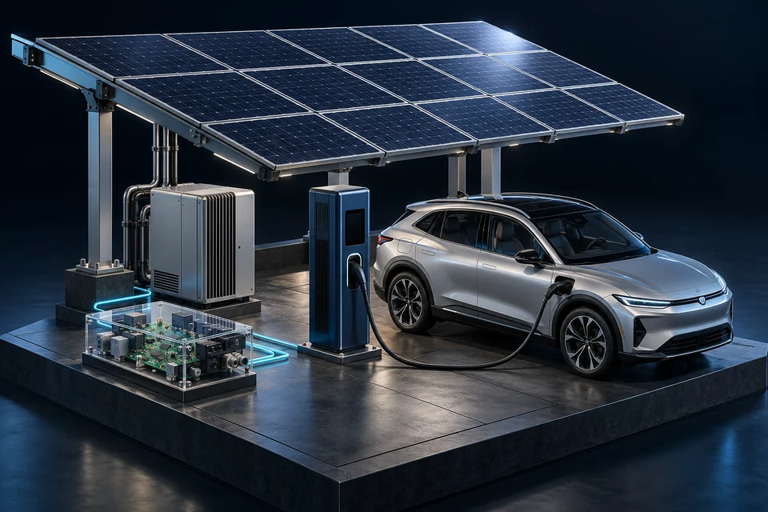
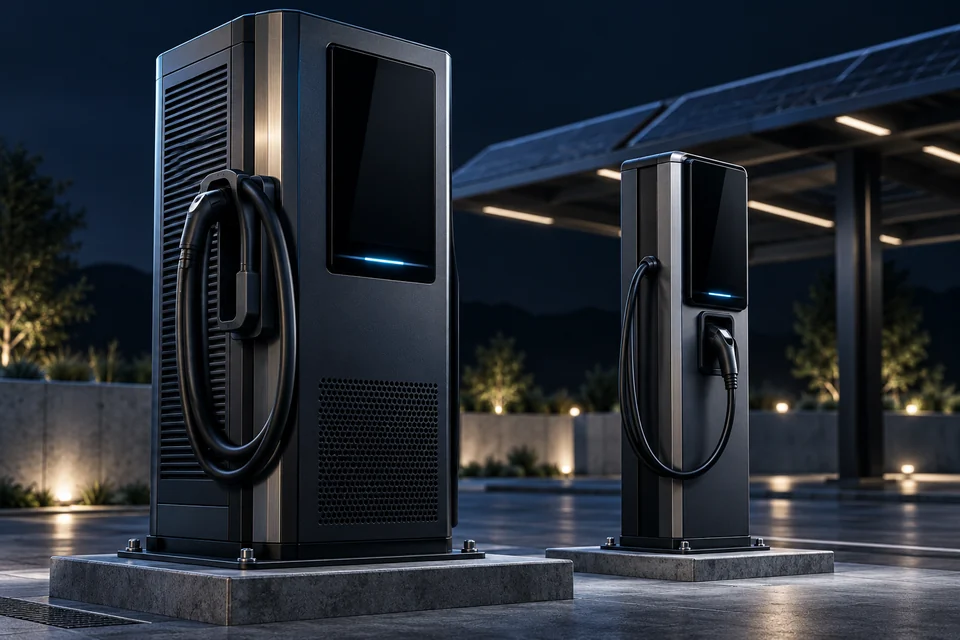
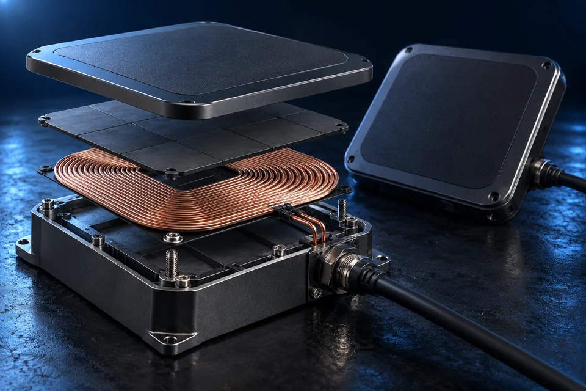
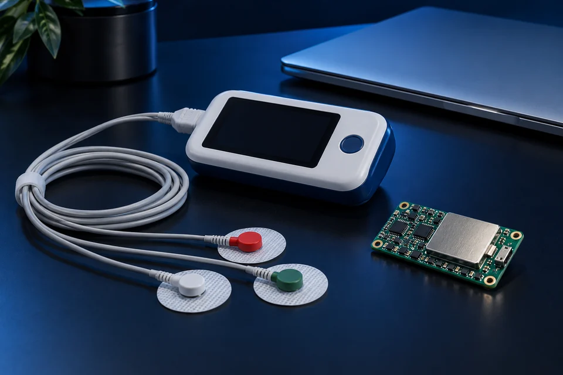
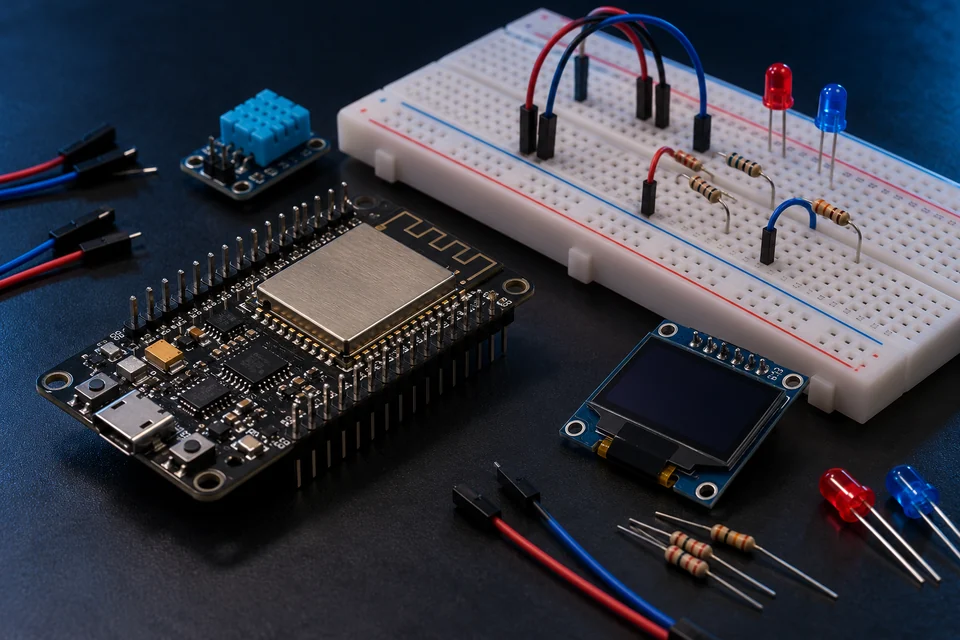
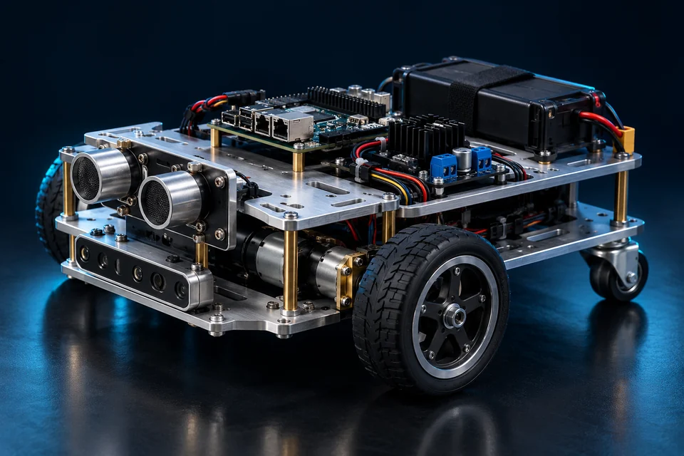

01MS THESIS · 2020–2022
IoT- and Robotics-Enabled Grid-Tied Renewable-Energy-Based EV Charging Station
Bringing renewable generation, electric mobility and connected monitoring into a single research direction.
Electrical Engineer · Researcher · Dubai, UAE
Renewable energy. Intelligent charging.
Hands-on engineering education.
Researching how solar generation, electric-vehicle charging and smart-grid energy management fit together, and turning that research into practical robotics and IoT training.
8 journal · 4 conference
out of 4.00 · UAJK
Founder, Robootika
STEM programmes
Hands-on technology
Education, affiliations & programmes
About
I connect electrical engineering research with hardware development and technology education.
My MS research at the University of Azad Jammu and Kashmir focused on the design and optimisation of an IoT- and robotics-enabled, grid-tied, renewables-based EV charging station. The work brought together solar PV, energy management, embedded monitoring and engineering prototypes. My published work covers EV charging scheduling, customer participation in smart grids, solar PV deployment and voltage control in high-PV networks.
Alongside research, I founded and lead the training at Robootika, where I have built robotics kits, designed STEM curricula and helped learners move from first circuits to working systems. I am now seeking a fully funded PhD position in intelligent and sustainable energy systems.
Research interests
Six directions that shape my research and the collaborations I am looking for.
Exploring photovoltaic systems, renewable integration and the practical design of clean-energy solutions.
Investigating energy management, power-system modelling and coordination in renewable-rich networks.
Studying the connection between electric mobility, charging schedules and renewable-powered infrastructure.
Connecting sensing, hardware and intelligent monitoring in practical engineering and educational systems.
Exploring prediction, coordination and data-informed control for energy and engineering applications.
Considering technical feasibility alongside energy cost, environmental impact and long-term system value.
Publications
Showing all 12 publications
Energy Reports, vol. 9, pp. 5922–5936Smart grids
Frontiers in Energy Research, vol. 11, pp. 1086793EV charging
Energy, vol. 276, pp. 127626Energy economics
Energy, vol. 281, pp. 128332EV charging
Sustainability, vol. 14(21), pp. 13767EV charging
IEEE Access, vol. 10, pp. 5440–5455Solar PV
Energies, vol. 15(17), pp. 6297Smart grids
Sustainability, vol. 14(20), pp. 13211EV charging
IEEE ICETECC, Jamshoro, Sindh, Pakistan, pp. 1–5EV charging
IEEE ICETECC, Jamshoro, Sindh, Pakistan, pp. 1–7Smart grids
4th International Ankara Multidisciplinary Studies Congress, Ankara, TürkiyeEV charging
International Turkic World Congress on Science and EngineeringIoT
No publications match these filters.
Projects
From renewable-powered EV charging to embedded medical sensing — the problem, the approach and my role in each.

01MS THESIS · 2020–2022
Bringing renewable generation, electric mobility and connected monitoring into a single research direction.
RESEARCH & FUNDING PROPOSAL
Campus solar PV feasibility, energy economics and a proposal for photovoltaic deployment at UAJK.

03JOINT BS PROJECT SUPERVISION
Guiding undergraduate engineering work on solar-powered charging systems for electric vehicles.

04PROTOTYPE & JOINT SUPERVISION
Inductive power transfer and connected monitoring for static wireless EV charging.

05BS THESIS & CARDIAC CARE STARTUP
Connecting embedded healthcare hardware with machine learning for remote cardiac monitoring.

06HARDWARE DEVELOPMENT & EDUCATION
Practical connected systems spanning irrigation, energy monitoring, robotics and automation.
Project images are illustrative renderings, not photographs of the completed work.
Experience
Research, hardware development, technical training and academic service.
Full CV (PDF)2021 — 2023
Electrical Engineering Department, UAJK
Served on the department’s Industry Advisory Board, connecting engineering education with professional perspectives.
2019 — 2023
NEP-NIC · Punjab IT Board
Trained 4,000+ students across 30 schools. Designed robotics and IoT hardware kits, coding modules and hands-on STEM curricula.
2019 — 2023
Technical workshops
Led practical engineering workshops, developed specialised training kits and functional prototypes, and facilitated innovation and entrepreneurship training.
JUN 2020 — SEP 2021
Muzaffarabad, Pakistan
Prepared funding submissions covering university solar PV, a robotics and automation lab, net metering and IoT-based smart irrigation.
2018 — 2019
The Catalyst GIK Incubator · Ghulam Ishaq Khan Institute
Led a healthcare technology startup through a one-year incubation programme, developing remote ECG monitoring with embedded systems and machine learning.
AUG — SEP 2017
Pakistan Engineering Services
Supported engineering activities and gained exposure to technical operations and professional engineering practice.
JUN — JUL 2017
Special Communication Organization
Gained exposure to telecommunications infrastructure, electrical systems, maintenance and engineering workflows.
Education
2020 — 2022
University of Azad Jammu and Kashmir, Muzaffarabad
CGPA 3.82 / 4.00
ThesisDesign and optimisation of an IoT- and robotics-enabled grid-tied renewables-based EV charging station.
2013 — 2017
University of Azad Jammu and Kashmir, Muzaffarabad
CGPA 3.13 / 4.00
ThesisECG device for remote monitoring and disease prediction of cardiac patients using machine learning.

Teaching & outreach
Founder and Lead Trainer.
Over six years I have delivered robotics and IoT training in 40 schools, reaching around 4,000 students. The programmes are built around hands-on work: learners study circuits and sensors, program embedded controllers, and finish by building connected prototypes that solve a real problem.
Sensors, components and circuit design
Embedded programming, actuation and control
IoT, automation and problem-solving
Recognition
UAE · Certification
Pakistan Engineering Council · Technical workshops
The Catalyst, GIK Institute · Team Lead
Electrical Engineering Department, UAJK
Certification records programmes across 40 schools
Graduate-level technical workshops
National Innovation Award, University of Azad Jammu and Kashmir.
Winner of national-level business plan competitions.
Startup competition judge and innovation evaluator; co-supervisor of two undergraduate theses; organiser of robotics camps and technical workshops.
Contact
I welcome enquiries about PhD positions, research collaborations, engineering roles and robotics or STEM education partnerships.
Send an emailDubai, United Arab Emirates